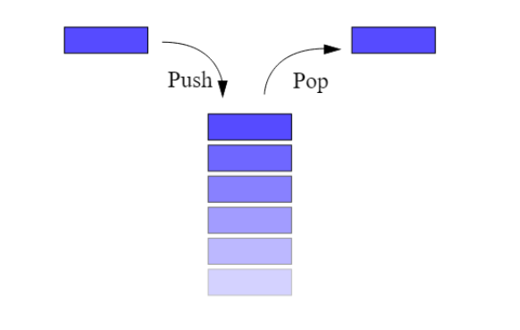

Les Piles
Rappel d'ouverture (5 minutes, de mémoire, cahier fermé)
Avant de commencer les piles, reprends ce que tu dois déjà tenir. Écris les réponses de mémoire, sans rouvrir le cours : c'est le fait de produire qui installe, pas le fait de relire.
- Écris la signature typée d'une fonction qui prend une liste d'entiers et renvoie leur somme.
- Quelle est la différence entre
returnetprintdans une fonction ? - Après
a = [1, 2]puisb = apuisb.append(3), que vauta? Pourquoi ?
Correction
def somme(nombres: list[int]) -> int:returnrend une valeur à l'appelant, qui peut s'en servir ;printaffiche et ne rend rien (None). Une fonction qui affiche au lieu de renvoyer est inutilisable dans un calcul.avaut[1, 2, 3].b = ane copie pas la liste, il donne un second nom au même objet : c'est l'aliasing. Retiens-le, il revient sur les piles.
Les piles (stacks en anglais) correspondent exactement à la notion de pile dans la vie courante. C'est une structure qui contient des éléments empilés.
- Une pile de cartes à jouer,
- Une pile d’assiettes…

Pour ajouter un élément on empile cet élément, il se retrouve donc au-dessus, et pour retirer un élément on ne peut retirer que l’élément se trouvant au sommet de la pile. On dit qu'on le dépile.
En anglais on dit last in, first out ou LIFO pour dire: dernier arrivé premier sorti.
Ce type de structure de données est par exemple utilisé dans:
- les éditeurs avec la fonction Annuler (CTRL+Z) et rétablir (CTRL+Y)
- les navigateurs pour reculer ou avancer dans l'historique.
- La lecture d'expressions mathématiques
- En général le parcours de structures de données comme les graphes, arbres... que nous verrons plus tard.
Pourquoi ces structures comptent
Bien implémentées, les piles et les files garantissent leurs opérations d'ajout et de retrait en temps constant, O(1) : quelle que soit la quantité de données, empiler, dépiler, enfiler et défiler prennent le même temps. C'est ce qui les rend omniprésentes en informatique : la pile d'appels de la récursivité, annuler/refaire, le parcours des graphes (en profondeur avec une pile, en largeur avec une file), l'ordonnancement des tâches. Tu les reverras toute l'année. Ce ne sera alors pas le moment de les réapprendre : il faut les avoir acquises dès maintenant.
Interface
Définition - Interface
L'interface d'une structure de données abstraite est composée des fonctionnalités théoriques que doit savoir remplir la structure de données. On appelle ces fonctionnalités des primitives.
Tu dois penser à la structure et au fonctionnement de l'interface (comme des légos) lorsque tu résous des problèmes. Pas à Python en particulier.
Une pile est définie par l’interface comprenant les primitives suivantes:
| Primitive | Description |
|---|---|
| CREER() → Pile | Renvoie une nouvelle Pile vide |
| EST_VIDE(p: Pile) → Booléen | Savoir si la pile p est vide |
| EMPILER(e: T, p: Pile) | Empiler un élément e pour le mettre au sommet de la pile p |
| DEPILER(p: Pile) → T | Dépiler un élément: le retirer du sommet de la pile et le renvoyer |
Avant toute ligne de Python : trace la pile à la main
Tu as le contrat ci-dessus, et c'est tout ce qu'il faut. Pas besoin de savoir comment une pile est fabriquée pour savoir ce qu'elle fait.
Dessine la pile p à chacune de ses modifications, dans un tableau à trois colonnes : l'opération, l'état de la pile, et la valeur rendue par l'opération.
La troisième colonne est celle qui piège : EMPILER ne rend rien, DEPILER rend l'élément et le retire.
p ← CREER()
pour v dans [2, 4, 3, 6, 8, 5, 77, 9, 1] :
si v est pair : EMPILER(v, p)
sinon : DEPILER(p)
Deux questions en fin de trace, et la seconde compte plus que la première :
- Que contient
pà la fin ? - À un moment, l'une des opérations n'aurait pas dû être possible. Laquelle, et pourquoi ?
Sur la question 2, si tu ne vois pas
Regarde l'état de p juste avant chaque DEPILER. Le contrat dit que cette opération a une précondition.
Avant de regarder la correction, écris une phrase
Pourquoi la troisième colonne n'est-elle pas remplie de la même façon selon l'opération ? Si tu ne sais pas l'écrire, ta trace n'est pas finie, et la correction ne t'apprendra rien.
Correction
| opération | état de p (du bas vers le haut) |
valeur rendue |
|---|---|---|
CREER() |
[] |
la pile neuve |
EMPILER(2, p) |
[2] |
rien |
EMPILER(4, p) |
[2, 4] |
rien |
DEPILER(p) |
[2] |
4 |
EMPILER(6, p) |
[2, 6] |
rien |
EMPILER(8, p) |
[2, 6, 8] |
rien |
DEPILER(p) |
[2, 6] |
8 |
DEPILER(p) |
[2] |
6 |
DEPILER(p) |
[] |
2 |
DEPILER(p) |
impossible | précondition violée |
pest vide. Les quatre derniersDEPILERl'ont entièrement dépilée. Piège de la question : elle porte sur ce que contientp, pas sur ce que les opérations ont rendu. La dernière valeur rendue est2, et pourtantpne contient plus rien.- Le dernier
DEPILER(p), celui que déclenche la valeur1. La pile était déjà vide. Le contrat ne définit pasDEPILERsur une pile vide : c'est une précondition, à la charge de celui qui appelle. Ce n'est pas une erreur qui apparaîtrait « au moment de l'exécution », c'est une opération qui n'a aucun sens dans le contrat. Tu n'as écrit aucune ligne de Python, et le défaut se voit quand même : c'est le contrat qui l'a dit.
Vérification individuelle : trois questions, cinq minutes, sans aide
À faire seul, sans code, sans voisin et sans machine. Une seule notion par question : le but n'est pas de te noter, c'est de savoir lesquelles des trois tu dois reprendre avant d'aller plus loin.
- Après
EMPILER(7, p), qu'est-ce que l'opération a rendu ? - La pile
pvaut[3, 9](du bas vers le haut). Que vautpaprèsDEPILER(p), et que rend l'appel ? pest vide. Que se passe-t-il si on appelleDEPILER(p), et pourquoi est-ce voulu ?
Correction
- Rien.
EMPILERmodifie la pile sans rien renvoyer. Confondre « modifier » et « renvoyer » est l'erreur d'entrée la plus fréquente. pvaut[3], et l'appel rend9.DEPILERfait les deux : il retire et il renvoie.- L'opération n'est pas définie : c'est une précondition, une condition que l'appelant doit garantir. En Python, tu verras plus bas que cela se traduit par une assertion qui arrête le programme. Tu retrouveras cette idée sur toutes les structures de l'année.
Implémentation en Python
Définition - Implémentation
L'implémentation d'une structure de donnée est la traduction pratique de son interface dans un langage de programmation spécifique. Les primitives doivent trouver une implémentation la plus rapide possible. Il peut exister plusieurs façon d'implémenter une structure de données dans un langage.
(on trouvera aussi parfois les termes implanter/implantation à la place d'implémenter/implémentation)
Le type list en Python présente deux méthodes rapides qui lui permettent d’implémenter la Pile:
- list.append(e): ajoute l’élément en fin de liste en O(1).
- list.pop(): supprime le dernier élément de la liste et le renvoie en O(1).
(voir la Documentation de python)
Implémentation minimaliste
On introduit d'abord un nouveau type Pile[T], construit à partir de list (une pile de T est une liste de T), puis les quatre primitives.
type Pile[T] = list[T]
def creer[T]() -> Pile[T]:
return []
def est_vide[T](p: Pile[T]) -> bool:
return len(p) == 0
def empiler[T](e: T, p: Pile[T]) -> None:
p.append(e)
def depiler[T](p: Pile[T]) -> T:
assert not est_vide(p), "La pile est vide"
return p.pop()
Implémentation avancée
Ici on considère que:
Une Pile d'éléments d'un type quelconque T est une liste d'éléments de type T
On ajoute aussi des docstrings qui intègrent les tests unitaires de chaque fonction.
Voici le fichier pile.py
# Python 3.13
type Pile[T] = list[T]
def creer[T]() -> Pile[T]:
"""Crée et renvoie une pile vide."""
return []
def est_vide[T](p: Pile[T]) -> bool:
"""Indique si la pile p est vide."""
return len(p) == 0
def empiler[T](e: T, p: Pile[T]) -> None:
"""
Empile l'élément e au sommet de la pile p.
Modifie p sur place et ne renvoie rien.
"""
p.append(e)
def depiler[T](p: Pile[T]) -> T:
"""
Retire l'élément au sommet de la pile p et le renvoie.
Précondition : p ne doit pas être vide.
"""
assert not est_vide(p), "La pile est vide"
return p.pop()
# --- Tests ---------------------------------------------------------------
# Une fonction de test par primitive, nommée test_<primitive>.
# Elle ne prend rien, ne renvoie rien, et échoue bruyamment si le code est faux.
def test_creer() -> None:
p: Pile[int] = creer()
assert est_vide(p)
def test_est_vide() -> None:
p: Pile[str] = creer()
assert est_vide(p)
empiler("test", p)
assert not est_vide(p)
def test_empiler() -> None:
p: Pile[int] = creer()
assert empiler(10, p) is None # empiler ne RENVOIE rien, il MODIFIE p
assert not est_vide(p)
empiler(5, p)
assert depiler(p) == 5 # 5 est bien au sommet : dernier entré
def test_depiler() -> None:
p: Pile[int] = creer()
empiler(1, p)
empiler(2, p)
assert depiler(p) == 2 # retire ET renvoie
assert depiler(p) == 1
assert est_vide(p)
def test_depiler_pile_vide() -> None:
p: Pile[int] = creer()
try:
depiler(p)
except AssertionError:
return # comportement attendu
assert False, "depiler sur une pile vide aurait dû échouer"
if __name__ == "__main__":
test_creer()
test_est_vide()
test_empiler()
test_depiler()
test_depiler_pile_vide()
print("pile.py : tous les tests passent")
La convention de test de l'année, à prendre tout de suite
Tu ne verras jamais de test écrit dans une docstring sur ce site. La règle est unique et vaut partout :
- la docstring dit le contrat en français : ce que la fonction prend, ce qu'elle rend, ce qu'elle exige ;
- une fonction séparée, nommée
test_suivi du nom de la fonction testée, porte lesassert.
Deux raisons, et la première est celle qui compte : c'est la forme qu'on te demandera à l'épreuve pratique. Autant s'entraîner dans la forme où l'on sera évalué. La seconde est pratique : ton éditeur sait retrouver tout seul les fonctions qui commencent par test_.
Regarde test_empiler ci-dessus : il ne vérifie pas seulement que ça marche, il vérifie qu'empiler ne renvoie rien. Un test qui ne contrôle que la valeur rendue laisse passer la moitié des erreurs sur une structure de données.
Piège : empiler et depiler modifient la pile
Ces deux primitives ont un effet de bord : elles changent l'état de la pile passée en argument. Après depiler(p), l'élément a disparu de p. Conséquence directe : calculer la taille d'une pile en la dépilant la vide. Une fonction censée laisser la pile intacte doit remettre les éléments en place (voir les exercices « destructif / non destructif »).
Piège : une pile faite avec une list n'est pas une list
L'implémentation utilise une list Python, donc rien ne t'empêche techniquement d'écrire p.insert(0, x) ou p[2]. Python l'acceptera sans broncher.
Ce serait pourtant une faute, et pas une faute de style : tu aurais atteint la pile par-dessous son interface. Les quatre primitives sont tout ce qu'une pile sait faire ; le jour où on remplace l'implémentation par une autre, ton p[2] cesse de marcher alors que le reste du programme continue.
La règle tient en une phrase : tu utilises une pile par creer, est_vide, empiler et depiler, jamais autrement. Le fait que le langage te laisse tricher ne rend pas la triche correcte.
L'état d'une pile est caché : seul le sommet est visible
On n'accède jamais au milieu d'une pile, seulement à son sommet. Le reste de l'état n'apparaît nulle part dans le code. Pour comprendre ce que font vraiment empiler et depiler, le bon réflexe est de tracer l'état à la main, comme dans l'exercice « Sans exécuter le code » plus bas.
Ce que l'IA ne change pas
Une IA écrit empiler et depiler en une seconde, et elle sait aussi rédiger la spécification et les tests. Ce n'est pas une question de capacité de la machine.
C'est une question de dépendance. Décider ce que doit faire chaque primitive (que se passe-t-il si on dépile une pile vide ? renvoie-t-on une erreur, None, autre chose ?) est un choix de conception que tu assumes, et dont tu réponds. Si tu ne sais pas énoncer ce contrat, tu ne peux pas juger si l'implémentation qu'on te propose le respecte. D'où la règle, qui vaut que tu écrives le code ou non : signature typée et tests d'abord, corps ensuite. L'épreuve pratique, elle, se passe sans IA.
Exercices
Préparation
Les chemins sont donnés relativement à ton répertoire prog_term
Les commandes sont lancées dans ce même répertoire.
Préparation des fichiers:
- Crée le répertoire
structures. Ajoutes-y un fichier vide__init__.py - Crée le répertoire
structures/lineaires. Ajoutes-y un fichier vide__init__.py - Reporter le code de création de la structure de Pile dans le fichier
structures/lineaires/pile.py - Crée le fichier
exos/exospiles.pyet ajoute ce code:
Tu travailleras dans le fichier exospiles.py
À savoir avant le premier exercice : deux endroits, deux façons d'écrire
À partir d'ici tu vas écrire dans deux fichiers différents, et il faut savoir à tout moment dans lequel tu es.
structures/lineaires/pile.py |
exos/exospiles.py |
|
|---|---|---|
| ce que tu y fais | tu fabriques la structure | tu utilises la structure |
| tu écris | def empiler(...), type Pile[T] = list[T] |
pile.empiler(x, p), p: pile.Pile[int] |
| tu as le droit de | toucher à la list qui est dessous |
seulement les quatre primitives |
Le préfixe pile. n'est pas une décoration : c'est la frontière. Quand tu écris pile.empiler(...), tu dis « j'appelle la fonction empiler du module pile », donc tu es dehors, tu utilises. Quand tu écris empiler(...) tout court, tu es dedans, tu fabriques.
C'est le même partage que celui du cours : implémentation d'un côté, interface de l'autre. Le préfixe te dit de quel côté tu te trouves, et il te préviendra le jour où tu voudras tricher : dans exospiles.py, p[0] ou p.insert(...) fonctionneront, mais tu auras traversé la frontière sans le dire.
- Tu lanceras ton programme à l'aide de la commande
uv run -m exos.exospiles
Exercice 1
Créer une fonction pile_exemple qui renvoie la pile suivante:
Sommet d'une pile
Écrire une fonction sommet qui renvoie le sommet d'une pile sans qu'elle soit modifiée à la sortie de la fonction. (on peut donc la modifier, mais on remet tout bien en place avant de sortir de la fonction)
def sommet[T](p: pile.Pile[T]) -> T:
"""
Compléter la docstring : que prend la fonction, que rend-elle,
et dans quel état laisse-t-elle p ?
"""
def test_sommet() -> None:
P = pile_exemple()
assert sommet(P) == "jaune"
... # et surtout : vérifie que P n'a pas bougé
La ligne à compléter dans test_sommet est l'essentiel de l'exercice. Une fonction qui renvoie le bon sommet en vidant la pile est fausse, et seul ce second assert le détecte.
Taille d'une pile - version destructive
Créer une fonction taille_pile[T](p: pile.Pile[T]) -> int qui renvoie la taille de p de manière destructive.
(la pile est vide si on l'affiche après un appel de fonction)
Taille d'une pile - version non destructive
Créer une fonction taille_pile[T](p: pile.Pile[T]) -> int qui renvoie la taille de p de manière non destructive.
(la pile est intacte si on l'affiche après un appel de fonction)
On pourra utiliser une pile temporaire.
Puis compare les deux versions par leur coût, et c'est la vraie question de cet exercice :
- Pour une pile de
néléments, combien deEMPILERet deDEPILERfait chacune des deux ? - L'introduction de cette page affirme qu'
empileretdepilercoûtentO(1). Ta fonction non destructive coûte-t-elleO(1)elle aussi ? Sinon, combien ? - Le contrat de la pile ne propose aucune primitive qui donne la taille. Est-ce un oubli, à ton avis ?
Indice sur la question 3
Une primitive TAILLE() en O(1) est possible : il suffirait de tenir un compteur à jour à chaque empilement. Demande-toi ce qu'on gagne à ne pas la mettre dans le contrat.
Correction
- La destructive fait
ndépilements. La non destructive faitndépilements,nempilements sur la temporaire, puisndépilements etnempilements pour tout remettre :4nopérations contren. - Non. Chaque opération de base est en
O(1), mais ta fonction en enchaîne un nombre proportionnel àn: elle est enO(n). Un assemblage d'opérations en temps constant n'est pas en temps constant. C'est l'erreur de raisonnement la plus fréquente sur les structures de données, et elle vaut pour toute l'année. - Ce n'est pas un oubli, c'est un choix. Un contrat minimal est plus facile à implémenter de plusieurs façons, et c'est tout l'intérêt de la notion d'interface. Le prix de ce choix, tu viens de le payer : ce que le contrat ne donne pas coûte
O(n)à reconstruire.
Renverser une pile
Créer et tester une fonction renverse qui prend une pile \(p\) en paramètre et renvoie une pile contenant les éléments de \(p\) dans l'ordre inverse.
On commencera bien évidemment par travailler la signature de la fonction d'après l'énoncé.
Renverser une pile en place
Créer une fonction renverse_inplace qui prend une pile en paramètre et la renverse en place.
Cette fonction ne retourne rien.
Indice léger
Transférer une pile dans une autre, élément par élément, inverse son ordre. Combien de transferts te faut-il, sachant que le résultat doit se retrouver dans p elle-même ?
Indice plus précis
Un transfert inverse l'ordre, deux transferts le rétablissent. Il t'en faut donc un nombre impair, et le dernier doit arriver dans p. Trois transferts, donc deux piles temporaires. Aucune autre structure n'est nécessaire, et tu n'as le droit d'utiliser que les quatre primitives.
Avant d'ouvrir la solution
En une phrase, sur ton cahier : qu'est-ce que l'indice t'a appris sur ce qui n'allait pas dans ton code ?
Solution
def renverse_inplace[T](p: pile.Pile[T]) -> None:
t1: pile.Pile[T] = pile.creer()
t2: pile.Pile[T] = pile.creer()
while not pile.est_vide(p):
pile.empiler(pile.depiler(p), t1) # p vers t1 : ordre inverse
while not pile.est_vide(t1):
pile.empiler(pile.depiler(t1), t2) # t1 vers t2 : ordre rétabli
while not pile.est_vide(t2):
pile.empiler(pile.depiler(t2), p) # t2 vers p : ordre inverse de l'original
La pile p n'est jamais remplacée, seulement vidée puis remplie : c'est ce que veut dire « en place ».
Sujet épreuve pratique (30 minutes grand maximum)
Ne te grille pas immédiatement cet exercice. Il faut le faire une fois que tu es à l'aise avec les autres, et pas le même jour.
On dispose de chaînes de caractères contenant uniquement des parenthèses ouvrantes et fermantes. Un parenthésage est correct si :
- le nombre de parenthèses ouvrantes de la chaîne est égal au nombre de parenthèses fermantes.
- en parcourant la chaîne de gauche à droite, le nombre de parenthèses déjà ouvertes doit être, à tout moment, supérieur ou égal au nombre de parenthèses déjà fermées.
Ainsi, "((()())(()))" est un parenthésage correct. Les parenthésages "())(()" et "(())(()" sont, eux, incorrects.
On souhaite programmer une fonction parenthesage qui prend en paramètre une chaîne de caractères ch formée de parenthèses et renvoie True si la chaîne ch est bien parenthésée et False sinon.
Cette fonction utilise une pile et suit le principe suivant : en parcourant la chaîne de gauche à droite, si on trouve une parenthèse ouvrante, on l’empile au sommet de la pile et si on trouve une parenthèse fermante, on dépile (si possible) la parenthèse ouvrante stockée au sommet de la pile.
La chaîne est alors bien parenthésée si, à la fin du parcours, la pile est vide. Elle est, par contre, mal parenthésée :
- si dans le parcours, on trouve une parenthèse fermante, alors que la pile est vide ;
- ou si, à la fin du parcours, la pile n’est pas vide.
Compléter le code, puis écrire sa fonction de test à partir de ces trois cas :
def test_parenthesage() -> None:
assert parenthesage("((()())(()))")
assert not parenthesage("())(()")
assert not parenthesage("(())(()")
Ajoute au moins deux cas de ton choix, dont la chaîne vide. Une fonction de test qui ne contient que les exemples de l'énoncé ne teste que ce que l'énoncé avait déjà prévu.
Code: